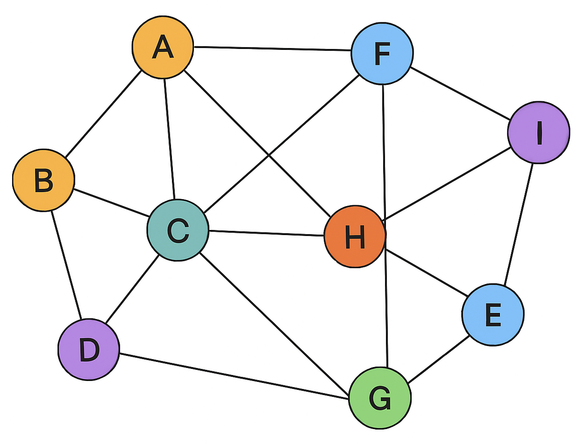
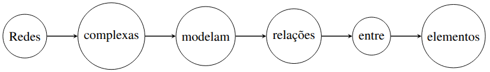
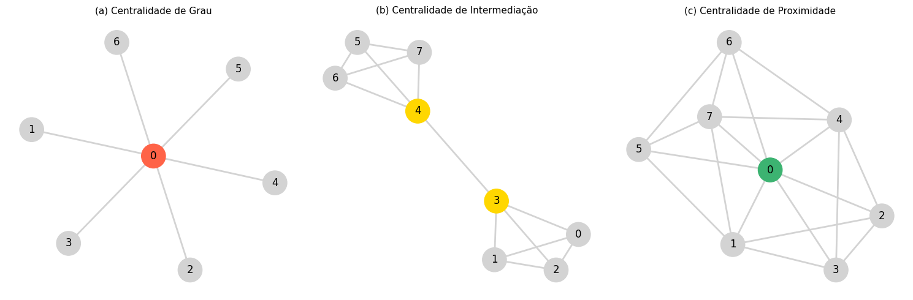
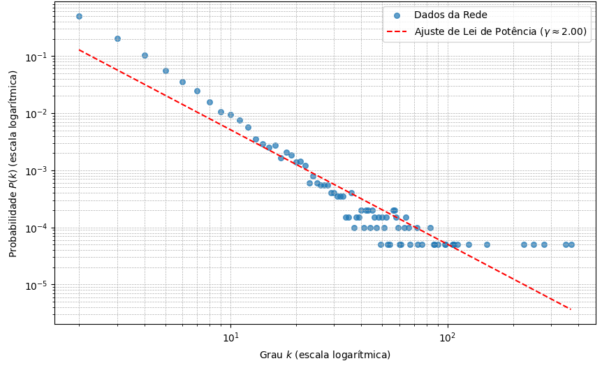
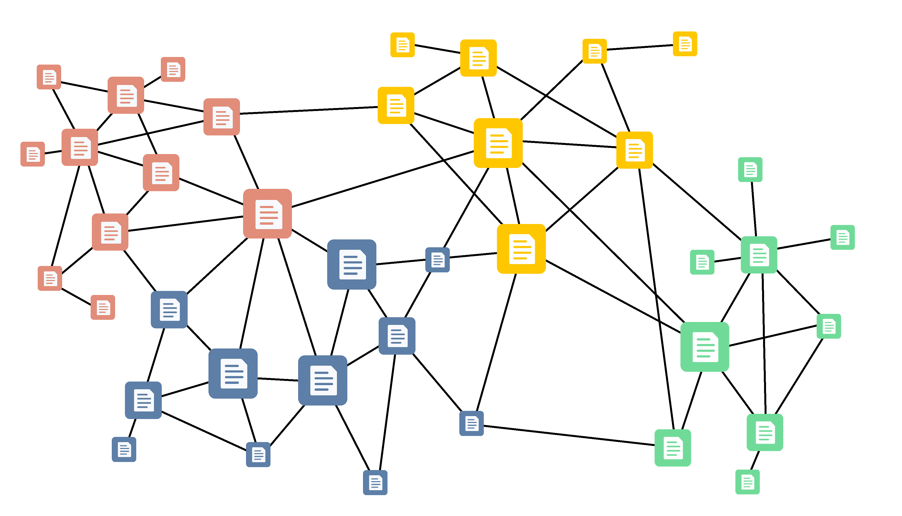
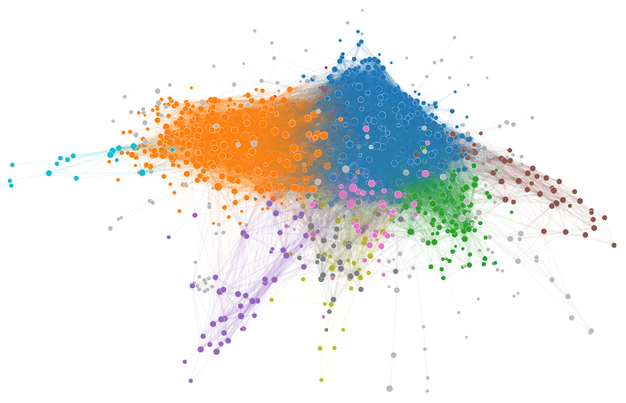
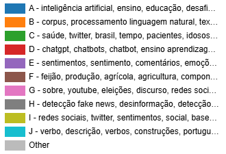

18 Redes complexas no processamento de língua natural do português
18.1 Introdução
Redes complexas são estruturas formadas por nós — que representam alguma entidade de interesse — e arestas — que estabelecem conexões entre pares de nós. Essas redes tipicamente descrevem sistemas com padrões de interconexão não triviais e oferecem um arcabouço para a análise de sistemas dinâmicos em diversos domínios, incluindo biologia, telecomunicações e ciências sociais (Estrada, 2011; Newman, 2010). Sua relevância se estende à área do Processamento de Linguagem Natural (PLN), em que o entendimento das relações entre palavras e conceitos é essencial para uma gama de tarefas como sumarização, análise de sentimento, modelagem de tópicos e recuperação de informação. No PLN, os textos são frequentemente representados por métodos que focam no conteúdo, como o modelo Bag-of-Words (BoW), que desconsidera a ordem das palavras, ou por modelos de embeddings (como Word2Vec ou BERT), que capturam o significado semântico em um espaço vetorial. A abordagem de Redes Complexas (RC) é fundamentalmente diferente e complementar. Em vez de focar apenas na frequência ou na semântica de palavras isoladas, a RC modela explicitamente a estrutura relacional do texto. Ao representar palavras, sentenças ou conceitos como nós e suas conexões (sejam elas de coocorrência, adjacência ou relações sintáticas) como arestas, uma RC permite analisar a topologia do discurso. Essa perspectiva estrutural revela propriedades que outras representações não capturam diretamente. Com elas, é possível quantificar a coesão textual, identificar quais conceitos são mais centrais (ou “hubs”) em uma argumentação e detectar a organização temática através da detecção de comunidades, como veremos na Seção 3. Portanto, as redes complexas oferecem uma “lupa” sobre a organização e a dinâmica do texto, indo além do conjunto de palavras que ele contém.
Medidas extraídas de redes complexas, como coeficientes de aglomeração e métricas de centralidade de nós, são fundamentais para entender a sua dinâmica e comportamento (OAEPublish, 2025). As redes podem também apresentar propriedades – como serem livre-de-escala ou pequeno-mundo – que impactam como as informações relacionadas às entidades se propagam e se estruturam no sistema (SpringerOpen Applied Network Science, 2017). Há grandes desafios para modelar redes, sobretudo porque muitos sistemas apresentam propriedades de autodissimilaridade em múltiplas escalas, para os quais a elaboração de modelos realistas requer esforço significativo. Ademais, a natureza evolutiva das redes complexas exige técnicas de análise para capturar as suas dinâmicas, especialmente em aplicações do mundo real, em que a disponibilidade de dados pode ser uma limitação (ScienceDirect, 2025a). Essa combinação de um sólido arcabouço teórico com a possibilidade de aplicações práticas ressalta a relevância das redes complexas para a pesquisa em PLN e seu potencial para ampliar a nossa compreensão das interações linguísticas. Também são assunto de debates as implicações do uso de redes complexas em várias áreas, por exemplo, a necessidade de uso ético de dados e potenciais vieses em interpretações algorítmicas. À medida que pesquisadores se aprofundam no estudo dessas redes, ganha cada vez mais importância a discussão sobre sua relevância e as responsabilidades associadas ao seu uso.
Neste capítulo, buscamos apresentar uma visão sobre usos de redes complexas no processamento da língua portuguesa. O conteúdo do capítulo está organizado da seguinte maneira: na Seção Redes complexas introduzimos os conceitos e a terminologia básica em Redes Complexas. Na Seção Detecção de comunidades introduzimos o problema de detecção de comunidades em redes e alguns algoritmos clássicos. Na Seção Aplicações de redes complexas em PLN para o português discutimos algumas aplicações de redes complexas em PLN para o português, e na Seção Exemplo de aplicação: Panorama de PLN em língua portuguesa recorremos às redes complexas para apresentar um panorama sobre as pesquisas em PLN no âmbito da Língua Portuguesa, não só as que envolvem redes complexas. As considerações finais são apresentadas na Seção Considerações finais.
18.2 Redes complexas
Como o objetivo deste capítulo é ilustrar o uso de redes complexas em PLN, apresentaremos algumas informações essenciais para a compreensão das aplicações, sem preocupação de tratar o tema de forma abrangente ou exaustiva. Assim, além de introduzir conceitos fundamentais, discutiremos as métricas das redes usadas em PLN, os modelos de redes e a dinâmica ou evolução temporal de redes. Uma introdução ao tema de redes complexas, que aborda conceitos e algumas aplicações, pode ser encontrada na referência (Appel; Junior, 2011).
18.2.1 Conceitos fundamentais
Os elementos fundamentais de uma rede são os nós, também denominados vértices, que representam as entidades de interesse, e as conexões entre nós, denominadas arestas. Formalmente, uma rede (ou grafo) pode ser representada como um par \(G = (V, E)\), em que \(V\) é o conjunto de nós (ou vértices) e \(E\) é o conjunto de arestas.

A Figura 18.1 ilustra uma representação visual de uma rede. Cada nó \(v \in V\) pode ser associado a dados que registram atributos específicos da entidade correspondente, representados como pares chave-valor. Por exemplo, um nó que representa uma pessoa pode incluir chaves como “nome”, “idade”, “localização”, com seus valores correspondentes (Mousavi, 2024).
As arestas estabelecem as conexões entre as entidades. Cada aresta é um par ordenado ou não ordenado de nós, isto é, \(e = (u,v)\) com \(u,v \in V\). Quando o par é não ordenado, isto é, \((u,v) = (v,u)\), a rede é dita não-direcionada; quando o par é ordenado, a rede é direcionada e \((u,v)\) representa uma conexão do nó \(u\) para o nó \(v\). Além disso, as arestas podem ter pesos associados, definindo uma rede ponderada, em que cada aresta \(e \in E\) tem um peso \(w(e) \in \mathbb{R}\), representando a intensidade ou custo da relação.
Em uma rede social, uma aresta indicativa de uma relação de amizade pode ser bidirecional, enquanto que uma aresta representando uma relação de compra seria unidirecional – em ambos os casos, evidenciando o fluxo direcional da relação. Em redes sociais, um exemplo de relação unidirecional ocorre quando um usuário segue outro, mas esse segundo usuário não o segue de volta. Isso é comum em plataformas como o X ou o Instagram. A título de ilustração de uma representação textual simples, considere, por exemplo, a sentença “Redes complexas modelam relações entre elementos”. Podemos representá-la como uma rede em que cada palavra é um nó (conjunto de nós \(V\)) e as arestas conectam as palavras que aparecem consecutivamente (conjunto de arestas \(E\)) (Figura 18.2):
\[\begin{aligned} V &= \text{\{Redes, complexas, modelam, relações, entre, elementos\}} \\[2mm] E &= \text{\{(Redes, complexas), (complexas, modelam), (modelam, relações),} \\ &\quad \text{(relações, entre), (entre, elementos)\}} \end{aligned}\]

A importância de um nó na rede é tipicamente refletida pelo seu grau. O grau de um vértice \(v\), denotado por \(\deg(v)\), é definido como o número de arestas incidentes a \(v\). Em redes direcionadas, distinguimos o grau de entrada (\(\deg^{-}(v)\)) e o grau de saída (\(\deg^{+}(v)\)), correspondendo, respectivamente, ao número de arestas que chegam e ao número de arestas que saem de \(v\). Um grau alto tipicamente está associado a um nó mais central ou influente na rede.
A representação de entidades e conexões em termos de nós e arestas define a essência das redes complexas, permitindo modelar sistemas complexos do mundo real, como redes sociais e padrões de comunicação na linguagem (ScienceDirect, 2025b). Formalmente, o estudo de redes complexas utiliza a teoria dos grafos. Por exemplo, podemos definir um grafo \(G = (V,E)\) em que \(V\) representa palavras, sentenças ou documentos, e \(E\) reflete relacionamentos entre eles, como coocorrência em um corpus ou relacionamentos sintáticos em uma sentença.
18.2.2 Propriedades
Várias propriedades exibidas pelas redes permitem entender a sua estrutura e comportamento, bem como analisar os mecanismos de propagação de informação na rede. Medidas de centralidade permitem quantificar e entender a importância de nós individuais. Além do grau (também conhecido como Centralidade de Grau), métricas como Centralidade de Intermediação e Centralidade de Proximidade fornecem indicações sobre como os nós estabelecem pontes ou estão estrategicamente posicionados dentro da rede. A Centralidade de Intermediação quantifica com que frequência um nó atua como uma ponte ao longo dos caminhos mais curtos entre outros nós – em PLN, por exemplo, isso poderia revelar palavras ou conceitos influentes em um texto. A Centralidade de Proximidade avalia quão rapidamente é possível alcançar todos os outros nós a partir de um dado nó, destacando os principais atores na distribuição de informações. A Figura 18.3 ilustra esses conceitos.

Para um grafo com \(N\) nós, as definições matemáticas de algumas dessas centralidades para um nó \(v\) são:
Centralidade de Grau (Degree Centrality): em redes direcionadas, distingue-se entre o grau de entrada e o de saída. A forma normalizada é dada por:
Grau de Entrada (In-Degree): \(C_{D}^{\text{in}}(v) = \frac{k_{\text{in}}(v)}{N-1}\), onde \(k_{\text{in}}(v)\) é o número de arestas que chegam a \(v\).
Grau de Saída (Out-Degree): \(C_{D}^{\text{out}}(v) = \frac{k_{\text{out}}(v)}{N-1}\), onde \(k_{\text{out}}(v)\) é o número de arestas que saem de \(v\).
Centralidade de Intermediação (Betweenness Centrality): \[C_B(v) = \sum_{s \neq v \neq t} \frac{\sigma_{st}(v)}{\sigma_{st}}\] onde \(\sigma_{st}\) é o número total de caminhos mais curtos do nó \(s\) para o nó \(t\), e \(\sigma_{st}(v)\) é o número desses caminhos que passam por \(v\).
Centralidade de Proximidade (Closeness Centrality): \[C_C(v) = \frac{N-1}{\sum_{u \neq v} d(v, u)}\] onde \(d(v, u)\) é a distância do caminho mais curto entre os nós \(v\) e \(u\).
Além de medidas de centralidade, várias estratégias foram propostas para a identificação de nós influentes na estrutura da rede, adaptadas a diferentes tipos de rede e cenários de aplicação. O coeficiente de aglomeração é uma medida de como os nós se agrupam localmente. Um alto coeficiente de aglomeração indica interconexões fortemente localizadas entre subgrupos de nós. No contexto de PLN, por exemplo, pode indicar a presença de conceitos ou palavras fortemente relacionados em um contexto particular ou tópico específico (Budel et al., 2023). Esta é uma propriedade particularmente relevante para análise semântica, em que é crucial entender os relacionamentos entre palavras ou frases ao implementar tarefas como desambiguação lexical ou reconhecimento de entidades nomeadas (Al-Rfou et al., 2014).
O Coeficiente de Aglomeração Local para um nó \(v\) é definido como: \[C(v) = \frac{2 E_v}{k_v(k_v-1)}\] onde \(k_v\) é o grau do nó \(v\) (o número de seus vizinhos) e \(E_v\) é o número de arestas existentes entre os vizinhos de \(v\). O denominador \(k_v(k_v-1)/2\) representa o número máximo possível de arestas entre os vizinhos de \(v\).
Uma revisão abrangente dessas estratégias as categoriza em abordagens tradicionais baseadas em topologia, para otimização, modelos de difusão de informação, métodos de aprendizado de máquina e técnicas mais recentes aplicáveis a redes dinâmicas (Chen et al., 2025). Ao contrário das medidas clássicas de centralidade, esses métodos consideram interações na rede ao longo do tempo, além das propriedades estáticas. Outra métrica relevante, denominada Comprimento de Caminho Médio, indica o número médio de passos ao longo dos caminhos mínimos entre todos os possíveis pares de nós. Em redes complexas, essa métrica tende a ter valores baixos, o que facilita a disseminação eficiente de informação na rede. O Diâmetro, por outro lado, é definido como o maior valor entre os comprimentos dos menores caminhos entre qualquer par de nós da rede.
As definições matemáticas para essas métricas são:
Comprimento de Caminho Médio (Average Path Length): \[L = \frac{1}{N(N-1)} \sum_{i \neq j} d(v_i, v_j)\] onde \(d(v_i, v_j)\) é a distância do caminho mais curto entre os nós \(v_i\) e \(v_j\).
Diâmetro (Diameter): \[D = \max_{i,j} d(v_i, v_j)\] que representa a maior distância de caminho mais curto entre qualquer par de nós \((v_i, v_j)\) na rede.
18.2.3 Tipos de redes
As redes podem ser categorizadas com base em suas propriedades estruturais e comportamento, que de alguma forma refletem a natureza intrincada dos sistemas do mundo real. Muito conhecidas são as redes aleatórias, livres de escala e mundo-pequeno.
Redes aleatórias
Nesse tipo de rede, as conexões entre os nós são estabelecidas aleatoriamente. Pode-se citar, a título de exemplo, redes de sensores distribuídos aleatoriamente em ambientes físicos ou redes de coocorrência de palavras construídas a partir de textos embaralhados ou gerados aleatoriamente. A despeito de terem servido de base para estudos teóricos importantes na ciência de redes, elas não refletem o comportamento e os padrões de interconectividade observados em sistemas do mundo real. Ainda assim, a análise desse tipo de rede é importante para ilustrar os princípios fundamentais que governam redes de tipos mais complexos. O modelo canônico para redes aleatórias é o de Erdős-Rényi (ER), \(G(N, p)\). Sua formação se dá a partir de \(N\) nós, onde cada par de nós possível é conectado por uma aresta com uma probabilidade \(p\) independente. A distribuição de grau \(P(k)\) de uma rede aleatória segue uma distribuição binomial, que, para redes grandes e com baixa probabilidade de conexão, se aproxima de uma distribuição de Poisson: \[P(k) \approx \frac{\lambda^k e^{-\lambda}}{k!}\] onde \(\lambda\) é o grau médio da rede. A maioria dos nós tem um grau próximo da média. Em redes aleatórias do tipo ER, a distância típica entre vértices é relativamente pequena.
Redes livres de escala
Essas redes se caracterizam pelo fato de a distribuição de grau dos seus nós seguir uma lei de potência. Em outras palavras, um número reduzido de nós tem um altíssimo número de conexões (são os chamados “hubs”), enquanto a grande maioria dos demais é muito pouco conectada. Redes de citação entre artigos científicos e redes de coocorrência de palavras em grandes corpora, como a Wikipedia ou o Google Books, são exemplos de redes livres de escala (Steyvers; Tenenbaum, 2005). Em PLN, esse fenômeno está relacionado à Lei de Zipf (Zipf, 1949), um princípio fundamental da linguística. A Lei de Zipf postula que a frequência de uma palavra em um corpus é inversamente proporcional à sua posição em um ranking de frequência. Em uma rede de coocorrência de palavras, os termos mais frequentes (os hubs) naturalmente coocorrem com uma variedade muito maior do que outras palavras. Por outro lado, a maioria das palavras — aquelas de baixa frequência, que compõem a chamada “cauda longa” de Zipf — tende a apresentar poucas conexões.
A distribuição de grau em lei de potência observada nessas redes textuais, ilustrada na Figura 18.4, é, em grande parte, um reflexo da Lei de Zipf que governa a frequência das palavras. O surgimento desse tipo de rede pode ser explicado por mecanismos como crescimento e conexão preferencial, ilustrados no conhecido modelo Barabási-Albert (BA), proposto por Albert-László Barabási e Réka Albert em 1999 (Barabási; Albert, 1999). O padrão de distribuição de conexões segue uma lei de potência, em que a probabilidade \(P(k)\) de um nó ter \(k\) conexões é dada por: \[P(k) \sim k^{-\gamma}\] em que \(\gamma\) é o expoente da distribuição, geralmente um valor entre 2 e 3. A formação pelo modelo Barabási-Albert (BA) se baseia no mecanismo de conexão preferencial: a probabilidade \(\Pi(v_i)\) de um novo nó se conectar a um nó existente \(v_i\) é proporcional ao seu grau \(k_i\): \[\Pi(v_i) = \frac{k_i}{\sum_j k_j}\]
A inserção de novos nós com probabilidade de conexão proporcional ao grau dos nós já existentes resulta no fenômeno conhecido como “rico-fica-mais-rico”, que induz à formação de hubs. Embora o modelo BA reproduza a característica de existência de hubs, algumas características de redes reais ainda não são representadas por este modelo. Uma delas é a possibilidade de surgimento de novas arestas entre vértices antigos ou o desaparecimento de arestas.

Redes mundo-pequeno
Essas redes são caracterizadas por comprimentos de caminho curtos e coeficientes de aglomeração altos, o que permite que a maioria dos nós seja acessível a partir de qualquer nó com um número pequeno de passos. Essa propriedade é frequentemente exemplificada pelo conceito dos “seis graus de separação”. Segundo esse conceito, quaisquer duas pessoas no mundo estariam — em média — a seis conexões entre si. A rede de atores de Hollywood que atuaram juntos exibe propriedades de mundo pequeno, assim como a WordNet e redes sintáticas de línguas naturais (Steyvers; Tenenbaum, 2005).
O modelo mundo-pequeno, introduzido em 1998 por Duncan J. Watts e Steven Strogatz (Watts; Strogatz, 1998), ilustra como uma rede pode transicionar de um formato de grade regular para uma estrutura mais aleatória enquanto mantém suas características de mundo-pequeno. Isso ocorre por meio de uma reatribuição aleatória de arestas, o que enfatiza as conexões sem alterar significativamente a estrutura global. O modelo de Watts-Strogatz (WS) descreve a formação dessas redes a partir de uma rede regular (anel) em que cada aresta é religada aleatoriamente com uma probabilidade \(p\). O padrão de distribuição não é definido por uma fórmula única de grau, mas pela coexistência de duas propriedades:
Alto Coeficiente de Aglomeração (\(C\)): Similar ao de uma rede regular e muito maior que o de uma rede aleatória (\(C \gg C_{\text{aleatória}}\)).
Baixo Comprimento de Caminho Médio (\(L\)): Similar ao de uma rede aleatória, crescendo logaritmicamente com o número de nós (\(L \sim \log(N)\)).
Redes complexas possuem várias características definidoras, incluindo heterogeneidade na distribuição do grau dos nós, alta aglomeração e modularidade. A diversidade nas conexões leva à formação de grupos coesos (comunidades) na rede, com conexões mais esparsas mantidas entre diferentes grupos. Essa modularidade é crucial para entender como as redes operam e evoluem.
18.2.4 Dinâmica
O estudo da dinâmica de redes complexas permite determinar como elas evoluem ao longo do tempo e influenciam os vários processos que nelas ocorrem, o que é importante para entender fenômenos como a propagação de doenças e a difusão de informações. As redes não são estáticas; elas mudam e se adaptam à medida que novos nós e links são adicionados ou removidos. Essa dinâmica pode ser entendida utilizando diferentes modelos teóricos, permitindo aos pesquisadores prever estados futuros das redes e compreender os mecanismos subjacentes que impulsionam as mudanças. Esses modelos podem descrever como um estado ou informação se propaga de nó para nó. Dois exemplos clássicos são os modelos de epidemia, como o SIR (Suscetível-Infectado-Recuperado), e os modelos de difusão de informação, como o Modelo de Limiar Linear:
- Modelo SIR (Suscetível-Infectado-Recuperado): usado para modelar a propagação de doenças; nesse modelo, cada nó pode estar em um de três estados. A dinâmica pode ser descrita por um sistema de equações diferenciais (em uma aproximação de campo médio):
\[\begin{align*} \frac{ds}{dt} &= - \beta \langle k \rangle s(t) i(t) \\ \frac{di}{dt} &= \beta \langle k \rangle s(t) i(t) - \delta i(t) \\ \frac{dr}{dt} &= \delta i(t) \end{align*}\]
Aqui, \(s(t)\), \(i(t)\) e \(r(t)\) são as frações de nós suscetíveis, infectados e recuperados, respectivamente. \(\beta\) é a taxa de transmissão, \(\delta\) é a taxa de recuperação e \(\langle k \rangle\) é o grau médio da rede. A condição para uma epidemia ocorrer é que o número básico de reprodução, \(R_0 = \frac{\beta \langle k \rangle}{\delta}\), seja maior do que 1.
- Modelo de Limiar Linear (Linear Threshold Model): usado para modelar a difusão de inovações ou comportamentos. Cada nó \(v\) possui um limiar de ativação \(\theta_v \in [0, 1]\). Um nó inativo \(v\) torna-se ativo no instante \(t+1\) se a soma das influências de seus vizinhos já ativos, ponderada por pesos \(b_{uv}\), atinge seu limiar: \[\sum_{u \in \text{vizinhos\_ativos}(v)} b_{uv} \ge \theta_v\] onde \(\sum_{u} b_{uv} \le 1\). O processo continua até que nenhum novo nó possa ser ativado.
18.3 Detecção de comunidades
No contexto do PLN, o conceito de “comunidade” estabelece um elo essencial entre a estrutura da rede e o significado linguístico. Na prática, uma comunidade identifica um agrupamento temático coeso ou um campo semântico em um corpus. De fato, em redes de linguagem, principalmente em redes semânticas (Steyvers; Tenenbaum, 2005), é comum observar grupos de nós fortemente conectados entre si e menos conectados com elementos externos ao grupo. No contexto de redes complexas, tais grupos são denominados comunidades. A Figura 18.5 ilustra uma rede hipotética e sua organização em comunidades, indicadas pelas diferentes cores. Em tarefas de processamento de linguagem e em diversas outras aplicações que envolvem a análise de redes, é comum a realização de uma etapa de identificação de comunidades.

Considere, por exemplo, uma rede construída a partir de um grande conjunto de notícias, em que os nós correspondem a palavras e as arestas conectam palavras que aparecem frequentemente juntas. Nessa rede, esperaríamos que palavras como “futebol”, “campeonato”, “jogador” e “partida” formassem um agrupamento muito denso, representando o tópico “Esportes” (ou especificamente “Futebol”). Da mesma forma, palavras como “governo”, “eleição”, “congresso” e “partido” formariam outra comunidade (“Política”). Identificar essas estruturas pode ser útil para revelar a organização temática latente do texto e constitui uma etapa crucial para tarefas como a modelagem de tópicos (em que comunidades podem indicar tópicos), a sumarização (ajudando a identificar os conceitos centrais de um texto) ou a desambiguação de palavras (entendendo os diferentes contextos em que uma palavra é usada).
Muitos algoritmos são usados para identificar comunidades em redes complexas, em que se busca maximizar a coesão entre os vértices de um mesmo grupo. Esses algoritmos são aplicados em vários domínios além do PLN, incluindo análise de redes sociais, biologia, detecção de fraudes e telecomunicações. Métodos proeminentes incluem o Algoritmo de Propagação de Rótulos (LPA, Label Propagation Algorithm) (Raghavan et al., 2007); o algoritmo Infomap (Rosvall; Bergstrom, 2008); o algoritmo Girvan-Newman (Newman; Girvan, 2004), e o algoritmo Louvain (Blondel et al., 2008).
Eles variam significativamente quanto à abordagem (Palacio-Niño; Berzal, 2024) (Singh; Garg, 2025). O algoritmo de Girvan-Newman (Newman; Girvan, 2004), um dos pioneiros, opera pela remoção iterativa de arestas: ele calcula a centralidade de intermediação das arestas e remove aquelas com maior centralidade até que a rede seja segmentada em comunidades distintas. Essa abordagem enfatiza a importância da conectividade das arestas. O LPA também adota uma estratégia simples, atribuindo rótulos a nós com base no voto da maioria de seus vizinhos. Inicialmente, cada nó recebe um rótulo único e, em cada iteração, os rótulos dos nós são atualizados para refletir o rótulo mais frequente entre seus vizinhos. Esse processo iterativo continua até que os rótulos se estabilizem, resultando em comunidades distintas. O LPA é eficiente e escalável, adequado para grandes redes. No entanto, seus resultados podem ser sensíveis à atribuição dos rótulos iniciais e à ordem de processamento dos nós, muitas vezes exigindo múltiplas execuções para alcançar resultados consistentes. Uma abordagem de consenso entre partições distintas pode também ser necessária para melhorar a qualidade das partições (Lancichinetti; Fortunato, 2012).
Já o algoritmo Infomap adota princípios da teoria da informação e passeios aleatórios. Um passeio aleatório (random walk) é um processo estocástico que descreve a movimentação de um “agente” que se desloca de nó em nó em uma rede seguindo regras probabilísticas. O algoritmo busca minimizar o comprimento do caminho de um passeador aleatório através da rede, capturando o fluxo de informação. Ao conceituar a rede como um mapa, o Infomap identifica agrupamentos de nós que são frequentemente visitados pelo passeador aleatório. Este algoritmo é reconhecido por sua robustez e estabilidade, sendo uma opção confiável quando for essencial entender o fluxo de informação na rede.
O Louvain é um algoritmo heurístico introduzido por Blondel et al. (Blondel et al., 2008) para detecção de comunidades em grandes redes. O algoritmo otimiza uma métrica de modularidade, uma função de qualidade que mede quão bem uma partição de uma rede separa conexões densas intra-comunidade de conexões esparsas inter-comunidade. Ele opera em duas fases principais que são repetidas iterativamente: (i) Otimização local de modularidade, em que cada nó é inicialmente atribuído à sua própria comunidade, e nós são movidos para comunidades vizinhas se isso resultar em um ganho de modularidade; e (ii) Agregação de comunidades, a partir do momento que não há ganhos de modularidade adicional no nível local, cada comunidade detectada é colapsada em um único nó, produzindo uma “super-rede” menor. A primeira fase é então reaplicada. Esse processo hierárquico e multinível prossegue até que nenhuma melhoria na modularidade possa ser alcançada. O algoritmo é eficiente, mostrando-se adequado para redes muito grandes, com milhões de nós, e hierárquico, produzindo uma hierarquia de comunidades em diferentes níveis de resolução. Também é estocástico (i.e., não determinístico), uma vez que a ordem em que os nós são processados ao decidir mover um nó para uma comunidade vizinha afeta o resultado. Mais recentemente, uma extensão do Louvain foi criada de forma a garantir que as comunidades encontradas sejam comunidades conectadas, além de aumentar a velocidade do método (Traag et al., 2019).
A despeito dos avanços significativos, a detecção de comunidades segue com desafios em aberto. Uma das questões fundamentais é a ausência de métodos universalmente aplicáveis a diferentes estruturas de rede. Os algoritmos tradicionais geralmente pressupõem que as comunidades são grupos distintos e densos de nós, o que pode levar a imprecisões em cenários em que as comunidades se sobrepõem, i.e., existem nós que pertencem a múltiplas comunidades. Além disso, é difícil avaliar objetivamente a qualidade do resultado, em vista da ausência de uma única métrica aplicável aos diferentes métodos. Métricas como o Índice Rand Ajustado (ARI), o Índice Omega e a Modularidade não capturam adequadamente a complexidade de estruturas de comunidades sobrepostas. Assim, muitas vezes é necessário adaptar os métodos de avaliação às características específicas das redes e comunidades analisadas. Outro desafio é identificar corretamente a granularidade (ou o nível de resolução) das comunidades detectadas, i.e., se estamos buscando identificar numerosas comunidades menores ou identificar um número menor de comunidades, mas maiores. A escolha afeta a interpretabilidade e a usabilidade da estrutura de comunidades obtida. Além disso, a análise das propriedades estruturais locais, que poderia aprimorar o processo de detecção, é muitas vezes limitada pela escalabilidade dos algoritmos existentes e pela ausência de dados de referência (ground truth) para validação.
A complexidade e a variabilidade inerentes às redes ressaltam a necessidade de abordagens customizadas, e pesquisas seguem na busca por ampliar a escalabilidade, o desempenho e a aplicabilidade dos algoritmos. Tendências incluem a integração de técnicas de aprendizado de máquina, o desenvolvimento de métodos de detecção de comunidades dinâmicas para análise em tempo real e algoritmos para lidar com comunidades sobrepostas.
18.4 Aplicações de redes complexas em PLN para o português
O desenvolvimento de aplicações de redes complexas em PLN tem tido participação significativa de pesquisadores brasileiros. A título de ilustração, dos cerca de 100 artigos indexados na Web of Science obtidos em uma busca expressa como (“natural language processing” and “complex network*”), realizada em setembro de 2025, aproximadamente um quarto são de autores brasileiros. Entretanto, essa busca não conseguiu capturar um conjunto representativo de artigos na área, como percebemos ao fazer um levantamento das contribuições de brasileiros da área. Possivelmente ocorreu o mesmo com autores de outros países. Aparentemente, a área está sub-representada na Web of Science e, portanto, o número real de artigos deve ser consideravelmente maior, provavelmente da ordem de algumas centenas. De todo modo, é notável a porcentagem de trabalhos brasileiros no tópico.
Em vista da grande flexibilidade das redes complexas como modelo de representação, sua diversidade de aplicações é enorme. A vantagem dessa abordagem é explorar a topologia da rede textual, que é complementar às análises de conteúdo. Por exemplo, em tarefas de sumarização extrativa, nos moldes das discutidas no Capítulo Sumarização Automática, a centralidade de um nó (representando uma sentença) pode indicar sua importância para o resumo, independentemente do peso semântico de suas palavras isoladas. Em análise de sentimentos, por exemplo, em textos de postagens em redes sociais (ver Capítulo PLN em Redes Sociais), a forma como os conceitos positivos e negativos se agrupam na rede pode revelar a polaridade de um texto de opinião com mais robustez. Na avaliação de traduções (ver Capítulo Tradução Automática), métricas de rede mostraram-se capazes de distinguir a qualidade e a fluidez de textos traduzidos por máquinas ou por humanos.
Apresentamos, nesta seção, um breve resumo de algumas contribuições de autores brasileiros, que foram pioneiros em demonstrar como essas métricas estruturais capturam aspectos complexos da qualidade textual, da simplificação e até mesmo do diagnóstico médico baseado em transcrições de fala.
Parcela significativa das contribuições descreve aplicações que abordam a classificação de textos modelados como redes complexas. A avaliação da qualidade de redações é uma das aplicações de interesse (ver Capítulo Correção Automática de Redação). Um dos primeiros artigos a utilizar redes complexas em PLN (Antiqueira et al., 2007) identificou uma alta correlação de métricas de redes com a qualidade dos textos em redações de vestibular. As redações foram modeladas como redes de coocorrência em que os nós representam as palavras. As notas atribuídas por professores aos itens de coesão/coerência, correção gramatical e adequação ao tema diminuíram com o aumento dos valores de métricas como grau de saída, coeficiente de aglomeração e desvio da dependência linear no crescimento da rede. A maior correlação foi observada para o quesito coesão/coerência, indicando que as métricas da rede permitiam capturar esse aspecto qualitativo do texto.
Como um exemplo, considere o seguinte trecho de texto que apresenta boa coesão: O pesquisador instalou gravadores na floresta. Os sons captados revelaram a presença de aves raras. Nesse caso, uma rede de coocorrência de palavras revelaria conexões claras entre termos como pesquisador, gravadores, floresta, sons e aves, formando uma estrutura interligada com caminhos curtos entre os nós. A palavra sons, por exemplo, funcionaria como um elo entre a ação de gravar e a descoberta das aves, contribuindo para a coesão semântica do texto. Agora, observe um texto menos coeso: O pesquisador instalou gravadores na floresta. A cidade estava movimentada com o festival de música. Embora ambas as frases sejam gramaticalmente corretas, elas pertencem a contextos distintos e não compartilham elementos semânticos relevantes. A rede de coocorrência resultante apresentaria dois componentes desconexos, refletindo a ausência de continuidade temática. Métricas como o coeficiente de aglomeração reduzido ou um maior diâmetro da rede poderiam ser utilizadas para indicar essa quebra de coesão.
A topologia e a dinâmica de redes revelam características estruturais de um texto, o que permite avaliar questões linguísticas inerentes à tradução manual e automática (abordada no Capítulo Tradução Automática). Amancio et al. (Amancio et al., 2011a) mostraram que é possível distinguir diferentes qualidades de traduções geradas por ferramentas de tradução automática de suas correspondentes manuais utilizando métricas como graus de entrada (ID) e de saída (OD), coeficiente de agrupamento (CC) e caminhos mínimos (SP). Os autores verificaram, por exemplo, que em redes de traduções automáticas o OD médio excede consistentemente os valores obtidos para traduções manuais, e que os valores de CC dos textos originais não são preservados em traduções manuais, mas o são em boas traduções automáticas. Isso provavelmente reflete os rearranjos textuais realizados por humanos durante a tradução manual.
Considere a frase original em inglês: The biologist recorded bird songs at sunrise in the rainforest. Essa sentença formaria uma rede de coocorrência coesa, conectando termos como biologist, recorded, bird songs, sunrise, e rainforest, todos relacionados ao contexto de pesquisa ecológica. Agora, compare duas possíveis traduções para o português:
Tradução automática: O biólogo registrou sons de pássaros na manhã na floresta.
Tradução humana: O biólogo gravou cantos de aves ao amanhecer na floresta tropical.
No exemplo, a tradução automática gerou estruturas mais genéricas e menos conectadas semanticamente. Termos como registrou, sons, manhã e floresta são corretos, mas formam uma rede com menor densidade e maior diâmetro, refletindo uma coesão temática mais fraca. Já a tradução humana preservou nuances do original, como cantos de aves e amanhecer, e introduziu termos mais específicos, como floresta tropical, resultando em uma rede mais compacta e interligada.
Ao comparar diferentes redes, métricas como o coeficiente de aglomeração, a densidade de conexões e o número de componentes podem indicar maior fidelidade semântica e coesão na tradução humana. Esse tipo de análise é especialmente útil para avaliar sistemas de tradução automática anteriores à era dos modelos que empregam aprendizado de máquina, que frequentemente apresentavam limitações na preservação de contexto e fluidez textual. O estudo citado (Amancio et al., 2011a) mostrou que as redes de palavras desses dois tipos de texto, ou seja, gerados por traduções automáticas ou manuais, possuem “assinaturas” topológicas distintas. Por exemplo, métricas como o grau médio das palavras e o coeficiente de agrupamento diferem. Isso permitiu treinar classificadores para automaticamente distinguir traduções humanas de traduções automáticas de baixa qualidade.
Ressalte-se que o artigo em questão foi publicado há mais de 15 anos, quando o desempenho dos tradutores automáticos era muito inferior ao atual. Abordagem similar foi aplicada para avaliar a qualidade da tradução automática, inclusive comparando traduções do português para o espanhol e para o inglês (Amancio et al., 2011a). As métricas de redes foram usadas como entrada em algoritmos de aprendizado de máquina que conseguiram distinguir textos oriundos de tradução humana, tradução automática de alta qualidade e tradução automática de baixa qualidade. Um resultado importante foi que a acurácia na classificação aumentou quando foram consideradas métricas de diferentes níveis hierárquicos na rede. Concluiu-se que a possível captura de um contexto mais amplo com os níveis hierárquicos pode ser útil para aumentar a acurácia de classificação com aprendizado de máquina (Amancio et al., 2011a). É interessante fazer uma analogia com o que se faz hoje com aprendizado de máquina nos modelos de língua de larga escala (LLMs, de large language models em inglês), em que os embeddings e o mecanismo de atenção fornecem contexto amplo, como discutido na Seção 4.2.6.
Três artigos abordam a adequação de redes complexas para tarefas de sumarização extrativa em português (discutidas no Capítulo Sumarização Automática deste livro). No primeiro, foram empregadas métricas de redes complexas para selecionar sentenças em um resumo extrativo (Antiqueira et al., 2009). A rede que representa um texto era constituída por nós correspondentes às sentenças, enquanto arestas conectavam sentenças que compartilhavam substantivos considerados significativos. Um conjunto de 14 sumarizadores foi produzido empregando diferentes métricas, como o grau dos nós e o comprimento de caminhos mínimos. Algumas versões apresentaram desempenho superior ao de sumarizadores que não empregavam conhecimento linguístico profundo. Em alguns casos, os resultados foram comparáveis aos dos sumarizadores de ponta baseados em recursos linguísticos de alto custo.
Para ilustrar a abordagem de sumarização baseada em redes de coocorrência semântica, considere o seguinte minitexto composto por três sentenças:
S1: A inteligência artificial avança rapidamente no Brasil.
S2: O avanço da inteligência artificial impacta diversos setores da sociedade.
S3: O clima no Brasil é predominantemente tropical.
O modelo constrói uma rede em que os nós representam sentenças e as arestas conectam sentenças que compartilham conceitos ou termos relevantes (por exemplo, inteligência artificial, Brasil, avanço). Nesse cenário:
S1 compartilha os termos inteligência artificial e Brasil com S2 e S3, respectivamente.
S2 conecta-se aS1 por meio dos termos inteligência artificial e avanço.
S3 conecta-se a S1 por meio do termo Brasil, mas não compartilha termos com S2.
A estrutura resultante é uma rede em que S1 atua como um nó central, com maior grau de conectividade. De acordo com métricas de centralidade (como centralidade de grau ou PageRank), S1 seria considerada a sentença mais representativa do conteúdo global do texto e, portanto, uma forte candidata à composição de um resumo extrativo. Esse tipo de abordagem é particularmente útil para sumarização automática, pois permite identificar sentenças que funcionam como “pontes semânticas” entre diferentes partes do texto, mesmo em corpora maiores e mais complexos.
Em outro trabalho (Tohalino; Amancio, 2018), redes também com sentenças representadas por nós foram usadas para identificar as sentenças mais relevantes para sumarização em vários documentos simultaneamente, em português e em inglês. No terceiro artigo (Amancio et al., 2012a), as redes eram formadas por coocorrência de palavras, ou seja, os nós eram constituídos por palavras em português. Mostrou-se que a incorporação de conhecimento linguístico foi capaz de melhorar, de maneira modesta, o desempenho do sumarizador automático. A conclusão principal foi quanto à utilidade de utilizar métricas de redes complexas para a tarefa de sumarização.
A simplificação de textos é essencial para garantir acessibilidade a leitores com habilidade de leitura limitada, o que tem sido objeto de pesquisa para o português do Brasil, como discutido no Capítulo Complexidade Textual e suas Tarefas Relacionadas deste livro. Um desafio é identificar o nível de simplificação adequado para uma audiência específica. Em um trabalho com textos representados por redes de coocorrência, verificou-se que a regularidade topológica se correlaciona negativamente com a complexidade textual (Amancio et al., 2012b). Além disso, a distância entre conceitos, representados como nós, tende a diminuir em textos menos complexos. As métricas das redes complexas foram tratadas com técnicas multivariadas de reconhecimento de padrões, o que permitiu distinguir entre textos originais e suas versões simplificadas. Para cada texto original, duas versões simplificadas foram geradas manualmente com um número crescente de operações de simplificação. Como esperado, a distinção foi mais fácil para as versões fortemente simplificadas, em que as métricas mais relevantes foram força do nó, caminhos mínimos e diversidade. Além disso, a discriminação de textos complexos foi aprimorada com métricas hierárquicas mais altas da rede, apontando, assim, para a utilidade de considerar contextos mais amplos em torno dos conceitos.
A distinção de textos com opiniões positivas ou negativas sobre um tema (problema abordado no Capítulo PLN em Redes Sociais) também pode ser feita classificando-se redes complexas que representam textos. No artigo de Amancio et al. (Amancio et al., 2011b), foram analisados pares de artigos de opinião publicados em um jornal de grande circulação, em que articulistas argumentavam contra ou a favor de um determinado tema. A distinção foi possível empregando várias métricas, incluindo graus, coeficiente de agrupamento, caminhos mínimos, eficiência global, centralidade de proximidade e acessibilidade.
A título de exemplo, considere duas resenhas curtas de um filme, uma positiva e outra negativa:
Resenha positiva: O filme é ótimo. As atuações são ótimas e o roteiro também é ótimo.
Resenha negativa: O filme é lento. As atuações são previsíveis e o roteiro é muito fraco.
A rede de coocorrência no primeiro caso, da resenha positiva, seria pequena e altamente conectada. O termo ótimo aparece em todas as sentenças e se conecta diretamente a filme, atuação e roteiro, formando um nó central (hub) com grau elevado. Essa estrutura indica forte polarização positiva e alta coesão semântica, o que facilita a detecção automática do sentimento positivo. No caso da resenha negativa, o resultado seria uma rede mais esparsa, com termos como lento, previsível e fraco distribuídos entre diferentes aspectos do filme. Não há um único termo dominante que conecte todos os elementos, resultando em uma rede com vários nós periféricos e menor densidade. Essa dispersão semântica reflete uma crítica fragmentada e facilita a identificação do sentimento negativo. Ao comparar essas redes, métricas como grau médio, coeficiente de aglomeração, diâmetro da rede e centralidade de termos afetivos podem ser utilizadas para inferir automaticamente o sentimento predominante. Redes densas com hubs positivos tendem a indicar avaliações favoráveis, enquanto redes dispersas com múltiplos termos negativos sugerem críticas desfavoráveis.
O estudo (Amancio et al., 2011b) mostrou que essa diferença na estrutura da rede, capturada por métricas como o coeficiente de agrupamento e os caminhos mínimos, é suficiente para classificar automaticamente a polaridade do texto. O conjunto de dados multidimensional foi mapeado em um espaço bidimensional por meio da análise de componentes principais. A distinção foi quantificada utilizando algoritmos de aprendizado de máquina, com acerto de 84,4% na discriminação automática das opiniões negativas.
Há muitas aplicações de PLN em saúde, como discutido nos Capítulos PLN na Saúde e Detecção de Transtornos de Saúde Mental a partir de Texto deste livro. O diagnóstico médico é essencialmente uma tarefa de classificação, razão pela qual atualmente se empregam diferentes algoritmos de aprendizado de máquina para a análise de imagens médicas e exames clínicos. Esse tipo de aplicação pode também ser feito com texto, como foi o caso da análise de textos transcritos a partir de falas de pacientes e voluntários para diagnosticar o comprometimento cognitivo leve (CCL), que normalmente antecede os sintomas de demências (Santos et al., 2017). Como os textos eram curtos, as redes complexas foram enriquecidas utilizando-se de embeddings de palavras. Ao enriquecer os nós (palavras) com embeddings, o modelo consegue capturar nuances semânticas que, combinadas com as métricas da rede, ajudam o classificador a detectar o comprometimento cognitivo. A maior acurácia na classificação binária do CCL foi obtida com o algoritmo Máquina de Vetores de Suporte (Support Vector Machine)(Santos et al., 2017).
18.5 Exemplo de aplicação: Panorama de PLN em língua portuguesa
Estabelecer um panorama para qualquer área de pesquisa exige hoje um grande esforço, em vista do enorme número de publicações. Uma estratégia introduzida há alguns anos (Silva et al., 2016) para obter tais panoramas consiste em combinar redes complexas com PLN, partindo-se de redes de citações ou de similaridade formadas com artigos extraídos de buscas em repositórios como a Web of Science ou o OpenAlex. Empregando algoritmos de identificação de comunidades, determinam-se as comunidades (agrupamentos) correspondentes a tópicos ou subtópicos da área sob estudo. A análise da rede, tanto em termos de seu formato e topologia quanto do conteúdo das comunidades, permite obter uma visão geral da área. Nesta seção, descrevemos os resultados de empregar essa estratégia para a área de PLN em português. A metodologia é detalhada nas subseções Redes de citações e similaridade e Identificação de tópicos em redes de pesquisa, e os resultados são apresentados na subseção Pesquisa em PLN para o português.
18.5.1 Redes de citações e similaridade
Uma rede de citações pode ser obtida a partir de um corpus de artigos, estabelecendo uma conexão entre dois artigos do corpus (representados como nós da rede) quando existe uma citação de um para o outro. Essa conexão é, em princípio, direcionada, i.e., sai do nó que representa o artigo que cita para o nó que representa o artigo citado. Entretanto, há situações em que se pode optar por ignorar o sentido das arestas, caso o objetivo seja simplesmente representar um relacionamento desse tipo entre os dois artigos.
Se o corpus é representativo de uma área de conhecimento, ou de um tópico de pesquisa, a rede de citações permite capturar informações sobre a estrutura do conhecimento nessa área ou tópico. É possível identificar artigos altamente influentes (muito citados), grupos temáticos, artigos que atuam como pontes entre diferentes grupos temáticos, e como ideias se propagaram ao longo do tempo. Artigos centrais muitas vezes são precursores de novas subáreas ou pontos de referência para a comunidade de pesquisa representada na rede. Já artigos que ligam grupos temáticos podem indicar trabalhos com alto grau de interdisciplinaridade, pelo potencial de aproximar comunidades de pesquisa que antes não dialogavam entre si. Esse tipo de análise permite responder perguntas como: quais artigos deram origem a um novo tema de pesquisa? Que áreas e subáreas estão crescendo rapidamente em número de citações? Existe uma fragmentação em comunidades?
As redes de citações evidenciam os relacionamentos entre os artigos, mas não capturam necessariamente o seu conteúdo semântico. Dois artigos podem abordar temas próximos ou relacionados sem que haja uma relação de citação entre eles. Para explorar relações de natureza semântica, pode-se recorrer às redes de similaridade textual. Nessa abordagem, uma conexão entre dois artigos representados como nós da rede é estabelecida quando seus conteúdos são considerados semanticamente próximos, ou seja, foi detectada alguma similaridade de conteúdo. Para quantificar essa proximidade semântica, utiliza-se uma representação vetorial conhecida como embedding (Pennington et al., 2014). Para mais informações sobre similaridade textual e embeddings sugerimos ao leitor consultar o Capítulo Modelos de linguagem deste livro.
Existem diversos modelos para gerar embeddings, que podem vetorizar desde palavras isoladas até textos completos. Na abordagem apresentada na Subseção Pesquisa em PLN para o português, cada resumo é representado por um vetor numérico usando o modelo SentenceTransformer, que pode mapear textos inteiros em um espaço multidimensional. A proximidade semântica dos textos é determinada pelo cálculo de similaridade do cosseno entre todos os pares de vetores. A expressão matemática para essa similaridade é dada por:
\[S_{cos} (A,B) = \frac{A \cdot B}{||A|| \:\: ||B||}\]
onde \(A \cdot B\) é o produto escalar entre os vetores \(A\) e \(B\), e \(||A||\) e \(||B||\) indicam as respectivas normas dos vetores. Esse produto escalar varia entre \(-1\) e \(1\); no entanto, no contexto de embeddings textuais, considera-se apenas o módulo. Assim, uma similaridade próxima de \(0\) indica que os dois textos são totalmente distintos, enquanto uma similaridade próxima a \(1\) revela que os textos são semanticamente próximos.
Para a construção da rede de similaridade nessa abordagem, considera-se ainda um limiar de similaridade, que estabelece o valor mínimo necessário para que uma conexão seja adicionada à rede. Ou seja, utilizando um limiar de \(70\%\) (\(S_{cos} (A,B) = 0.7\)), apenas os pares de artigos cuja similaridade exceder este valor estarão conectados por uma aresta. Essa etapa evita que se crie uma rede excessivamente densa e garante que o modelo gerado ofereça uma visão estruturada da proximidade temática entre os artigos, servindo de base para a identificação de padrões na literatura. Artigos que compartilham temas centrais tendem a compor agrupamentos temáticos, revelando subáreas de estudo ou tópicos emergentes. Conexões entre agrupamentos podem indicar tópicos interdisciplinares ou tendências de convergência de temas de pesquisa. Essas redes permitem identificar artigos que abordam temas semelhantes, além de evidenciar padrões ocultos não evidenciados nas relações de citação. As redes de similaridade são então complementares às redes de citações. São particularmente úteis para pequenos grupos de artigos, como em uma área emergente na qual ainda não se identificam trabalhos centrais com alto número de citações.
18.5.2 Identificação de tópicos em redes de pesquisa
O método introduzido por Silva et al. (Silva et al., 2016) estabelece uma estratégia para identificar os principais temas (tópicos) associados a uma área de pesquisa, dada uma rede criada a partir de um corpus textual de artigos científicos representativo da área. A estratégia associa um algoritmo de detecção de comunidades na rede com a identificação dos tópicos abordados pelos artigos pertencentes às diferentes comunidades. Assim, comunidades são caracterizadas por conjuntos de termos (palavras-chave - unigramas e bigramas) extraídos do corpus a partir da quantificação da importância semântica dos termos, no contexto da sua ocorrência naquela comunidade. Em particular, os termos elencados são extraídos do título e resumo dos artigos que compõem a rede (seja ela de citação ou de similaridade), cujos conteúdos contêm informações suficientes para uma boa caracterização dos termos mais representativos.
A importância dos termos na rede é quantificada por meio de dois índices de frequência relativa. Inicialmente, é determinada a frequência de um termo dentro de sua própria comunidade e, em seguida, sua frequência no restante da rede. Por exemplo, para determinar a frequência de um termo \((w)\) em uma comunidade \((\alpha)\), conta-se o total de artigos \(n_{\alpha}(w)\) dessa comunidade que contêm o termo \((w)\). Com isso, a frequência do termo relativa dentro da comunidade \(F_{\alpha}^{\: in}(w)\) é:
\[F_{\alpha}^{\: in}(w) = \frac{n_{\alpha}(w)}{|\alpha|}\]
em que \(|\alpha|\) é o número de artigos pertencentes à comunidade \((\alpha)\). Analogamente, definimos a frequência relativa fora da comunidade \((\alpha)\) como:
\[F_{\alpha}^{\: out}(w) = \sum_{\gamma \: \neq \: \alpha} \frac{n_{\gamma}(w)}{N - |\alpha|}\]
Neste caso, \((\gamma)\) representa uma comunidade qualquer, diferente de \((\alpha)\), e \(N\) é o número total de artigos da rede. Ou seja, \(F_{\alpha}^{\: out}(w)\) se refere à frequência relativa do termo \((w)\) fora da comunidade \((\alpha)\).
Com as relações de frequência interna e externa à comunidade \((\alpha)\) estabelecidas, a importância de um termo \(I(w)\) é definida como a maior diferença entre \(F_{\alpha}^{\: in}(w)\) e \(F_{\alpha}^{\: out}(w)\), ou seja:
\[I(w) = max_{\alpha}[F_{\alpha}^{\: in}(w) - F_{\alpha}^{\: out}(w)]\]
Os termos-chave são agrupados com base na distância topológica média entre os artigos que os contêm, ou seja, é utilizado o comprimento médio do caminho mais curto \(\langle l \rangle_{uv}\) entre um par de termos-chave \((u,v)\). O algoritmo inicialmente determina a menor distância \((l_{ij})\) entre cada par de artigos \((i,j)\) na rede e então, para cada par de termos-chave \((u,v)\), calcula a média dos menores caminhos entre todos os pares de resumos \((A_{i},A_{j})\) dos artigos cujos termos-chave \(u\) e \(v\) estão presentes. A representação matemática desses conceitos é dada na equação abaixo:
\[\langle l \rangle_{uv} = \sum_{(u,v) \: \in \: (A_{i} \: \times \: A_{j})} \frac{l_{ij}}{|(u,v) \: \in \: (A_{i} \: \times \: A_{j})|}\]
Em termos gerais, significa que conjuntos de termos-chave são agrupados segundo a distância topológica média entre eles. Ressalte-se que os unigramas e bigramas são classificados de acordo com a mesma medida. Quando um bigrama possui alto \(I(w)\), há grande probabilidade de que seus unigramas compostos também tenham alto \(I(w)\), gerando redundância. Esse problema é resolvido com a remoção dos unigramas do conjunto de palavras-chave que fizerem parte de qualquer outro bigrama no conjunto. Essa prática proporciona uma maior prioridade a termos-chave (bigramas) mais específicos. Ao final, o método gera uma rede complexa composta por conjuntos densamente conectados (agrupamentos), que são caracterizados por seus termos-chave com maior índice de importância.
18.5.3 Pesquisa em PLN para o português
O desafio inicial consistiu em localizar as contribuições em PLN em português na literatura. Buscamos identificar artigos científicos publicados sobre o PLN para a língua portuguesa, escritos nas línguas portuguesa ou inglesa. Bases de dados como Web of Science e OpenAlex incluem textos em português, mas as estratégias de busca podem ser falhas, ou pelo menos mais difíceis de otimizar do que para textos em inglês. Há também o problema da menor visibilidade dos fóruns de publicação. Artigos em fóruns relevantes, como o PROPOR, podem não estar indexados. A baixa visibilidade representa, obviamente, uma limitação para o estudo proposto, assim como para a valorização das contribuições científicas de países lusófonos em PLN. Diante dessas limitações, não há como garantir que o panorama apresentado a seguir seja totalmente fiel ao panorama da literatura produzida para o PLN em português, ao contrário do que se pode afirmar para estudos anteriores em outros tópicos (Oliveira; Oliveira, 2025; Oliveira et al., 2025). Nestes últimos trabalhos não havia dúvidas de que os artigos mais relevantes para as respectivas áreas foram recuperados. Críticas sobre o panorama apresentado serão muito bem-vindas para garantir estudos mais precisos no futuro e para que a comunidade do PLN em português busque estratégias para ampliar a visibilidade dos trabalhos na área.
O número de artigos que abordam PLN para a língua portuguesa encontrados em diferentes buscas, na Web of Science e OpenAlex, foi sempre inferior a 5.000. Esse número reduzido inviabiliza a construção de redes de citações, que seriam esparsamente conectadas. A alternativa foi construir redes de similaridade, como descrito na Subseção Redes de citações e similaridade, para o que também houve algumas dificuldades. Usado em estudos anteriores, o SciBERT (Beltagy et al., 2019) foi treinado com artigos e textos científicos em inglês e mostrou-se inadequado para textos em português. Isso motivou a adoção do SentenceTransformer multilíngue, um modelo BERT capaz de lidar com outras línguas. Apesar de não ser especializado em artigos científicos, foi a opção com melhores resultados. A busca no OpenAlex com os termos “PLN” OR “NLP” OR “processamento de linguagem natural” OR “natural language processing” retornou 3.303 artigos, dos quais 1.766 compõem a maior componente conectada da rede de similaridade, construída considerando um limiar de similaridade igual a \(70\%\). A maior componente da rede resultante é exibida na Figura 18.6.


Link para visualização interativa da rede: Rede de Similaridade
O Quadro 18.1 lista as 10 maiores comunidades identificadas na rede da Figura 18.6, incluindo o número de artigos por comunidade e uma descrição gerada pelo ChatGPT a partir dos termos-chave associados a cada comunidade. Estas descrições foram geradas com um comando “Faça uma descrição dos tópicos abordados pelo cluster X, com base nas palavras-chave que o caracterizam”. A maior comunidade (A, em azul, com 748 artigos) é dedicada à inteligência artificial, principalmente ao seu uso em diferentes domínios, como o jurídico e o educacional. Uma inspeção (sem valor estatístico) nos títulos dos artigos indica que muitos deles se referem a textos, alguns de fato envolvendo PLN, embora outros talvez não. Mencione-se aqui uma possível dificuldade de identificação de comunidades devido às ambiguidades de nomenclatura. O termo inteligência artificial (IA) é usado em contextos diversos, nem sempre com precisão na terminologia. É comum o uso do termo “aprendizado de máquina” de forma intercambiável com IA, como se fossem sinônimos, ignorando que aprendizado de máquina é subárea de IA. PLN é outra subárea de IA, mas suas comunidades de pesquisadores nem sempre se identificam com grupos de IA que atuam em outras subáreas. Parece, portanto, inevitável que a busca por trabalhos em PLN encontre artigos de IA, mas que não necessariamente abordam PLN. De qualquer forma, é surpreendente que quase metade dos artigos da rede estejam na comunidade A, em que o foco está em usos de IA - e não em PLN.
Já a segunda maior comunidade, B, em laranja, com 377 artigos, é de fato de artigos em PLN. Ela inclui artigos relacionados à construção e organização de corpora, classificação automatizada de textos e uso de linguística computacional para tarefas de análise e categorização. Artigos relacionados a aplicações em saúde aparecem na terceira comunidade, C, em verde, com 110 itens. Essa comunidade inclui trabalhos em temas variados, como análise sistemática da literatura em saúde e análise de sentimentos ou opinião relacionada à saúde. Parte desses artigos pode abordar tópicos de PLN, mas provavelmente há outros que envolvem algum tipo de processamento de texto, não necessariamente PLN. As demais comunidades são consideravelmente menores, com algumas dezenas de artigos. São, em geral, bastante específicas e abordam temas em PLN, com uma possível exceção. Trata-se da comunidade F (em marrom, com 46 artigos), composta por artigos sobre agricultura. Dos poucos artigos efetivamente de PLN que podem ser identificados, destacam-se os de análise de literatura no tópico. A comunidade D (em vermelho, 53 artigos) inclui artigos sobre assistentes de conversação (chatbots), principalmente o ChatGPT. São, portanto, artigos recentes. A comunidade E (em roxo, com 47 artigos) é dedicada à análise de sentimentos. Eleições e política são os temas principais na comunidade G (rosa, com 41 artigos), com trabalhos de PLN principalmente dedicados à análise de texto em redes sociais. Outra comunidade típica de PLN é a H, em cinza-escuro, com 38 artigos que versam sobre detecção de notícias falsas ou desinformação. A comunidade I, em verde-claro, com 37 artigos, é vizinha à comunidade E na rede da Figura 18.6, pois também trata de análise de sentimentos, com foco no Twitter. A última comunidade, J, em verde-musgo, com 18 artigos, inclui estudos linguísticos, como análise semântico-discursiva utilizando PLN. Alguns poucos artigos que não foram categorizados como pertencendo a alguma comunidade aparecem em cinza-claro na Figura 18.6.
O formato da rede pode ser inspecionado cuidadosamente a partir do modelo tridimensional interativo acessado no link informado acima e também merece comentários. A rede é dominada por duas comunidades, A e B, que são bastante conectadas entre si. A comunidade J, de estudos linguísticos com e para PLN, é conectada apenas com a comunidade B, que engloba a maioria dos estudos em PLN. Pode-se afirmar, então, que essas duas são comunidades de pesquisadores de fato atuantes em PLN. O argumento se justifica porque o panorama que se depreende da rede da Figura 18.6 talvez permita distinguir trabalhos de grupos de pesquisadores que efetivamente atuam em PLN de trabalhos de pesquisadores não necessariamente identificados com essa área, mas que passaram a atuar em processamento de texto como consequência dos avanços tecnológicos em aprendizado de máquina e, mais recentemente, a IA gerativa. O que se observa é que as demais comunidades são sempre conectadas à comunidade A; seus artigos têm maior similaridade com aqueles classificados mais genericamente como IA do que com PLN. Apenas a comunidade E (em roxo), relacionada à análise de sentimentos, está próxima da comunidade B, embora ainda se mostre mais conectada à comunidade A.
Quadro 18.1 Comunidades na rede de PLN.
Uma análise manual permite identificar os tópicos mais relevantes nas diferentes comunidades, mas é inviável para um estudo pormenorizado, em vista do número de artigos da rede (mais de 1.700). É possível, entretanto, buscar auxílio das ferramentas com modelos de língua de larga escala (LLMs, do inglês large-language models), que podem processar texto a uma velocidade muito superior à de um ser humano. Em setembro de 2025, não há garantias de que tais ferramentas forneçam análises ou resumos fiéis aos artigos sob estudo, principalmente porque a janela de contexto disponibilizada para um usuário pode não ser suficiente para cobrir todo o corpus. Há, entretanto, evidências empíricas de que essas ferramentas conseguem fornecer uma análise superficial adequada. Com essa expectativa, solicitamos ao ChatGPT uma expansão na descrição das comunidades da Figura 18.6.
Com os termos-chave de cada comunidade e suas respectivas descrições iniciais fornecidas pelo ChatGPT, foi solicitado um levantamento mais detalhado dos tópicos apontados por ele. Para isso, foi utilizado o seguinte comando “Faça uma expansão para a descrição do cluster X, se aprofundando nos tópicos apresentados por ele de acordo com suas palavras-chave e a busca central utilizada para produzir a rede”. Os textos produzidos, individualmente para cada comunidade, apresentaram um aprofundamento dos tópicos descritos na coluna “Descrição” do Quadro 18.1. Os textos foram editados, por concisão, e suas análises e conclusões estão descritas a seguir.
Já comentamos a partir da análise manual que a maior comunidade, A, foca na aplicação de técnicas de IA e PLN na educação, revelando um movimento crescente de integração de tecnologias inteligentes em processos de ensino e aprendizagem, com destaque para sistemas de tutoria inteligente, plataformas adaptativas, ferramentas de correção automática de textos e chatbots educacionais. Os trabalhos também abordam de forma crítica os desafios pedagógicos e técnicos que acompanham essa transformação. Entre eles estão a dificuldade de adaptar modelos de PLN para diferentes contextos culturais, a necessidade de preparar professores para integrar essas ferramentas em suas práticas e os riscos de dependência tecnológica. Além disso, surgem preocupações sobre vieses algorítmicos, transparência na tomada de decisão das máquinas e privacidade dos dados estudantis, questões que exigem debates éticos e regulatórios. A literatura coberta nessa comunidade não se restringe às aplicações imediatas, mas também reflete sobre o impacto estrutural da adoção da IA na educação. Muitos artigos discutem como essas tecnologias estão redefinindo o papel do professor, não como substituto, mas como mediador em um ecossistema de aprendizagem híbrido, onde humanos e máquinas colaboram. Ao mesmo tempo, destacam-se análises empíricas sobre a eficácia dessas ferramentas na melhoria do desempenho acadêmico, no engajamento dos alunos e na inclusão de grupos tradicionalmente marginalizados no acesso ao ensino.
Como já mencionado, a comunidade B contém literatura fundamental de PLN, concentrando-se nos fundamentos linguísticos e computacionais com ênfase em corpus, classificação automática e análise textual. Os estudos desse grupo envolvem a construção, curadoria e utilização de corpora. Fica evidenciado o papel central dos corpora para treinar, avaliar e comparar algoritmos de PLN em diferentes tarefas, como análise de sentimentos, categorização de documentos e reconhecimento de entidades nomeadas. São abordados também os desafios metodológicos relacionados à anotação, padronização e representatividade dos dados (questões abordadas no Capítulo Conjunto de dados, dataset e corpus deste livro), uma vez que a qualidade e a diversidade dos corpus impactam o desempenho dos modelos. Nesse sentido, surgem discussões sobre métodos automáticos e semiautomáticos de anotação, bem como sobre a integração de abordagens linguísticas tradicionais com técnicas de aprendizado de máquina. Além disso, chama-se a atenção para as particularidades do português, idioma menos contemplado na pesquisa internacional de PLN do que o inglês. Esse foco evidencia um esforço da comunidade científica em reduzir desigualdades linguísticas e promover avanços na adaptação de modelos globais a contextos locais. Os trabalhos também revelam preocupações quanto à dimensão sociotécnica do PLN, discutindo o risco de vieses reproduzidos por corpora desbalanceados ou pouco representativos. A literatura aponta ainda para a necessidade de ferramentas linguísticas acessíveis, que possam servir tanto à pesquisa acadêmica quanto a aplicações práticas em educação, saúde e setores industriais.
A comunidade C explora a aplicação do PLN em saúde, com ênfase em redes sociais como o Twitter e em contextos marcados pela pandemia da COVID-19. Os trabalhos desse grupo investigam como técnicas de PLN podem ser empregadas para monitorar, analisar e prever fenômenos relacionados à saúde pública, desde a identificação de sintomas relatados por pacientes até a avaliação de percepções sociais sobre políticas sanitárias. Essa vertente evidencia o papel estratégico do PLN na compreensão de grandes volumes de dados não estruturados, capazes de complementar fontes tradicionais de informação médica e epidemiológica. Os estudos também abordam a utilização do Twitter como fonte de dados em tempo real, permitindo a detecção de surtos, o acompanhamento de discussões sobre vacinas e tratamentos e a análise das emoções e preocupações expressas pela população. O caráter dinâmico e global das redes sociais potencializa o PLN como ferramenta de vigilância em saúde, mas também levanta desafios metodológicos, como a necessidade de filtrar ruídos, lidar com ambiguidade textual e diferenciar informações confiáveis de conteúdos desinformativos. Além disso, a pandemia de COVID-19 aparece em muitos artigos, em um período em que se empregou PLN para analisar notícias relacionadas e comentários em redes sociais. Outro ponto relevante é o impacto da análise automatizada na prática clínica e na formulação de políticas de saúde. Pesquisas avaliam o potencial de modelos de PLN para apoiar diagnósticos, identificar grupos de risco, prever demandas hospitalares e oferecer suporte a revisões sistemáticas de literatura biomédica. Paralelamente, surgem reflexões sobre os limites éticos e legais do uso de dados provenientes de redes sociais, sobretudo em relação à privacidade e ao consentimento dos usuários.
Os chatbots são o assunto central da comunidade D, principalmente o ChatGPT. A literatura agrupa estudos sobre o desenvolvimento de agentes conversacionais voltados para suporte pedagógico — desde chatbots que oferecem retorno imediato em tarefas escritas até assistentes que guiam o estudante passo a passo em resoluções de problemas. Muitos trabalhos relatam experimentos com plataformas educacionais integradas a chatbots, avaliando como esses agentes podem personalizar explicações, fornecer exercícios adaptativos e atuar como tutores suplementares em disciplinas diversas. Alguns trabalhos nessa comunidade combinam revisões sistemáticas com estudos empíricos para testar protótipos em sala de aula ou em ambientes controlados. As avaliações frequentemente medem ganhos de aprendizagem, engajamento, aceitabilidade por parte de alunos e professores, além de métricas de usabilidade e qualidade da conversação (coerência, relevância das respostas, taxa de intervenção humana). Há também trabalhos técnicos que abordam arquiteturas (agentes baseados em regras vs. modelos gerativos), adaptação para domínios educacionais, técnicas de prompting e estratégias para integrar chatbots a sistemas de gestão de aprendizagem (para saber mais sobre o tema, sugerimos consultar o Capítulo ChatGPT, MariTalk e outros agentes de conversação deste livro).
A análise de sentimentos é o tópico dominante nas comunidades E e I, com destaque para dados provenientes de mídias sociais e comentários online em português. Os trabalhos desses grupos exploram como técnicas de PLN podem ser aplicadas para identificar, classificar e quantificar sentimentos positivos, negativos ou neutros, bem como emoções mais complexas, em grandes volumes de dados textuais. Essa linha de pesquisa é relevante para entender o comportamento dos usuários, monitorar percepções públicas sobre produtos, serviços ou eventos, fornecendo subsídios para áreas como publicidade, comunicação e políticas públicas. Os estudos evidenciam o desenvolvimento e a aplicação de métricas específicas para a análise de sentimentos, incluindo métodos baseados em léxicos, aprendizado de máquina e modelos de linguagem pré-treinados. Além disso, os trabalhos abordam questões metodológicas e práticas, incluindo desafios relacionados à ambiguidade textual, ironia, sarcasmo e diversidade linguística no português brasileiro.
A comunidade F pareceu ser a menos aderente ao PLN na análise manual, pois os títulos dos artigos normalmente não indicavam uso de PLN. Entretanto, segundo a descrição do ChatGPT, o PLN está presente na análise textual em contextos agrícolas, com ênfase em culturas como feijão e soja. Ainda segundo o ChatGPT, a comunidade contém literatura na interface entre tecnologia e prática agrícola, demonstrando como a análise de textos e a extração de conhecimento podem contribuir para avanços concretos na produção de alimentos. A comunidade G é dedicada ao estudo de eleições e políticas, concentrando-se na análise de discursos políticos, eventos eleitorais e interações em redes sociais, principalmente no Twitter e no YouTube. Há artigos explorando técnicas de PLN para identificar padrões de comunicação, detectar discursos de ódio, analisar sentimentos e compreender o impacto das mensagens veiculadas por políticos, influenciadores e cidadãos em contextos eleitorais. Essa abordagem permite mapear tanto a propagação de opiniões quanto a dinâmica de engajamento do público em diferentes plataformas digitais. Além disso, investigam estratégias de comunicação política, incluindo a construção de narrativas, o uso de linguagem persuasiva e a disseminação de mensagens polarizadoras.
Artigos sobre detecção de notícias falsas e desinformação predominam na comunidade H, em que há ênfase no uso de PLN para identificar padrões linguísticos, sinais de veracidade e estratégias de manipulação em notícias e conteúdos compartilhados em redes sociais. O objetivo central é desenvolver métodos que permitam avaliar a confiabilidade das informações, detectando conteúdos enganosos e prevenindo a disseminação de desinformação em larga escala. Os estudos nessa comunidade abordam múltiplas abordagens metodológicas, incluindo modelos baseados em aprendizado de máquina supervisionado e não supervisionado, análise de métricas linguísticas, redes semânticas e técnicas de classificação de textos. Além disso, a literatura enfatiza a importância de corpus específico para o português brasileiro, permitindo que os algoritmos lidem com variações linguísticas, regionalismos, gírias e construções sintáticas típicas do idioma. Muitas pesquisas também relacionam a detecção de notícias falsas sobre a pandemia de COVID-19, analisando a propagação de informações incorretas e seu impacto sobre comportamentos de saúde e percepção pública.
A pequena comunidade J concentra-se no estudo de verbos, construções verbais e aspectos semântico-discursivos do português. Há ênfase na aplicação de técnicas de PLN para analisar padrões gramaticais, categorias verbais e relações semânticas, contribuindo para o desenvolvimento de modelos linguísticos mais precisos e adaptados às especificidades do idioma. Também aparecem pesquisas associadas à anotação e classificação de verbos, construção de bases de dados linguísticos e análise de estruturas sintáticas e semânticas em textos. Esses estudos permitem compreender como os verbos e suas construções funcionam em diferentes contextos comunicativos, servindo para tarefas de PLN como análise sintática, geração de linguagem natural e tradução automática.
Para fins de estudo e transparência, foi disponibilizado um arquivo complementar contendo uma lista dos artigos que compõem as dez maiores comunidades da rede de similaridade. O arquivo está organizado em abas que correspondem às comunidades identificadas; cada aba apresenta uma tabela com os títulos e respectivos links de acesso aos artigos no repositório de origem.
Link de acesso: Arquivo Complementar
18.6 Considerações finais
O sucesso do uso de redes complexas para o PLN parece ser indiscutível, a julgar pela gama de aplicações comprovadas. A expectativa foi confirmada de que é possível capturar características semânticas, sintáticas e mesmo pragmáticas ao representar um texto como uma rede. A literatura da área, entretanto, não é vasta e o número de artigos deve ser da ordem de algumas poucas centenas. Essa produção tem contribuição relevante de autores brasileiros, que estiveram entre os primeiros a aplicar conceitos e métodos de redes complexas em PLN. Embora os trabalhos dos autores brasileiros sejam majoritariamente focados no processamento de textos em inglês, há pelo menos algumas dezenas de artigos que abordam PLN para o português. Neste capítulo, apresentamos um breve resumo de algumas dessas contribuições, em sumarização, desambiguação lexical, tradução automática, análise de sentimentos e diagnóstico médico baseado em texto.
As perspectivas quanto aos usos de redes complexas para aplicações em PLN foram abordadas em um comentário (Amancio, 2014) que enfatizou a necessidade de maior rigor na interpretação dos fatores que contribuem para o sucesso dos modelos de rede. Por outro lado, é interessante fazer uma comparação ou analogia com modelos de língua de larga escala (LLMs), uma vez que muitas das tarefas de PLN realizadas com redes complexas podem atualmente ser feitas utilizando LLMs. Pode-se especular que as informações advindas das características estruturais e dinâmicas das redes representando textos sejam, de alguma maneira, inferidas por meio dos mecanismos de embedding e de atenção dos LLMs. A grande capacidade de processamento e a janela de contexto dos LLMs tendem a resultar em desempenho significativamente superior nas tarefas de PLN, em comparação ao uso de redes. De fato, em pelo menos um trabalho ainda não publicado de pesquisadores do Núcleo Interinstitucional de Linguística Computacional (NILC) mostrou-se que o uso de modelos de língua gera resultados consideravelmente melhores. Referimo-nos à capacidade de sistemas inteligentes de estimar a pontuação de redações de ENEM, em que modelos usando BERT (“transformer”) mostraram-se mais eficientes do que o uso de métricas de redes complexas. A comparação não é necessariamente justa, pois o desempenho das redes não foi otimizado variando-se as métricas exaustivamente.
De todo modo, acreditamos que a maioria das tarefas de PLN será mais bem executada com LLMs, o que poderia indicar que não há muito futuro para o uso de redes complexas em PLN. Entretanto, deve-se considerar que as redes continuarão sendo adequadas para verificar modelos e estudar a importância de aspectos linguísticos nas diferentes tarefas. As informações estruturais capturadas pelos modelos podem contribuir para a melhor compreensão dos processos linguísticos envolvidos, ou seja, garantir mais interpretabilidade para os resultados do processamento de textos. Redes também serão importantes para arquiteturas baseadas em grafos e como fontes de informação em tarefas de visualização exploratória de itens da literatura científica, como no panorama apresentado neste capítulo para o PLN em português.